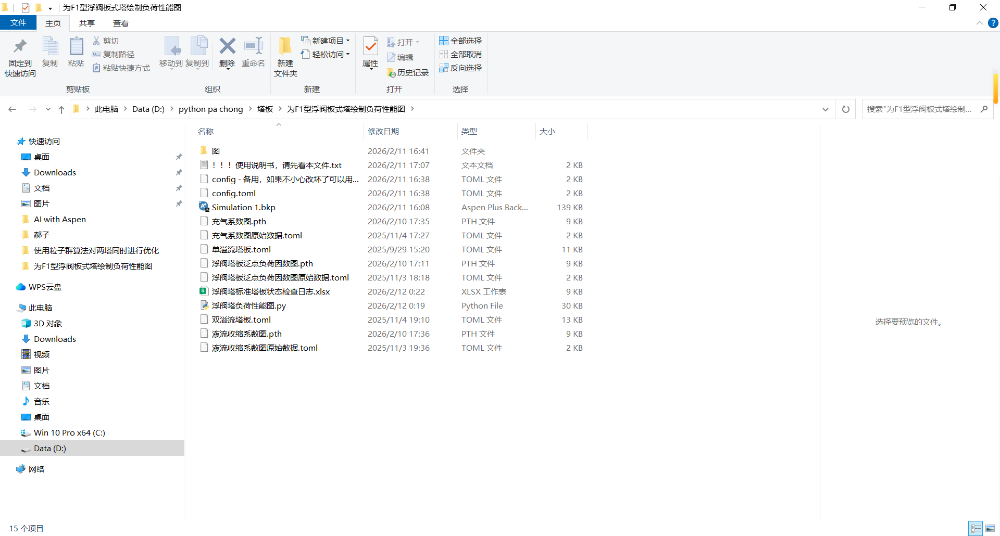

摘要： 手工算塔板就像在电子厂拧螺丝。为了探索效率的极限，我们的群友帮倒忙尝试用 Python (COM) 控制 Aspen，并训练了一个简单的 PyTorch 神经网络来拟合经验图表。这是一个 V0.1 版本的自动化校核原型，分享给大家
文件到时候会放在群链接，大家可以进我的QQ群获取:
Python与Aspen交流群:562721026

01 写在前面：一个“想偷懒”的念头
做化工设计的兄弟们都有过这种“至暗时刻”：
Aspen 模拟好不容易收敛了，以为能下班了，结果到了水力学校核（Hydraulic Rating）环节，还是得切回手动模式。
我们要对着那张祖传的《泛点负荷相关图》（或者史密斯图），眯着眼睛估读：“这大概是 0.12 还是 0.125？” 读完数据，再手算雾沫夹带、液泛因子。算完发现 Flood > 85%，红了。怎么办？改塔径，改板间距，然后上述步骤全部重来一遍。
作为一名如果不写代码就手痒的大三学生，我一直在想：能不能把这个流程自动化？
经过一个周末的折腾，我搭建了一个基于 Python + 深度学习的初版脚本。它目前还只是一个原型（Prototype），肯定有不少 Bug，但它跑通了一个很有意思的逻辑闭环。
这个思路大致是这样的
1.运行程序，读取塔径等数据
2.选择单溢流还是双溢流
3.进行塔板结构几何结构生成（这个使用的是穷举法）
4.从Aspen获取具体的关键数据-粘度，表面张力等（这个需要提前输入）
5.用神经网络得到这几条线的拟合曲线和直线.
6.进行水力学核算
7.进行操作弹性分析
8.得到核算表格和图
今天发出来，权当抛砖引玉，供大家来看一番。
02 技术路线：把 Aspen 变成 Python 的“子程序”¶
传统的 Excel VBA 虽然能用，但扩展性有限。于是选择了 Python 的 win32com 库，通过 Windows 的 COM 接口，直接“接管” Aspen。
原理拆解： 利用 win32com.client.Dispatch 实例化 Aspen 文档对象。这相当于在后台开了一个“隐形”的 Aspen，可以直接读写其内存中的 Variable Tree（变量树）。
代码实操： 比起手动导出数据，这种“实时抓取”的方式显然更优雅：
```Plain Text
初始化 Aspen V14 (对应版本号 40.0，具体视安装版本而定)¶
aspen = win32.Dispatch('Apwn.Document.40.0') aspen.InitFromArchive2(bkp_path)
自动寻找全塔负荷最高的“瓶颈板”¶
抓取液相密度 (HYD_RHOL) 和 粘度 (HYD_MUL)¶
rou_L = aspen.Tree.FindNode(f"/Data/Blocks/{block}/Output/HYD_RHOL/{stage}").Value
这就好比给 Aspen 装了个 API，虽然有时候连接不太稳定（老用户都懂 COM 接口的脾气），但只要连上了，数据提取就是毫秒级的事。
03 尝试：用神经网络“拟合”经验图表
这是本项目最“过度设计”（Overkill）但也最有趣的地方。
**痛点：**
浮阀塔设计的核心参数——**泛点负荷因数** 和 **充气系数** ，本质上是多变量非线性函数。

传统的做法是线性插值，或者用复杂的多项式拟合。
**群友的解法：** 既然是非线性映射，为什么不试试**神经网络**？ 群友尝试训练了一个轻量级的 **PyTorch 全连接网络 (MLP)**。不追求数学解析式，而是让神经网络去“学习”标准图表上的数据点分布。
**学术细节：**
- **模型架构**：2个输入层，第一层隐藏层32个神经元，激活判断，第二层隐藏层16个神经元，激活判断，第三层隐藏层16个神经元，激活判断，第四层隐藏层16个神经元，激活判断，输出层。
- **推理过程(应该是四层隐藏图，这里是一个实例)**：

```Plain Text
# 一个非常简单的全连接网络结构
class SimpleModel(nn.Module):
def __init__(self):
super().__init__()
self.net = nn.Sequential(
nn.Linear(2, 32), nn.ReLU(), # 引入非线性激活
nn.Linear(32, 16), nn.ReLU(),
nn.Linear(16, 1)
)
# 加载训练好的模型权重 (.pth)
# 这一步代替了“人眼查图”
c_f = model(input_tensor).item()
当然，神经网络的准确性完全取决于训练数据的质量。目前的模型在标准工况下表现尚可，但在极端边界条件下（比如极小板间距或极端物性），AI 可能会一本正经地胡说八道。所以，它目前只能作为辅助参考，不能完全替代工程师的判断。
04 成果输出:输出Excel表格和图像
我用 Matplotlib 和 OpenPyxl 做了两套可视化输出，这也是这个脚本目前最实用的部分。
1. 负荷性能图 (The Figure)¶
这是工程师最关心的“那张图”。脚本内置了国标水力学公式，尝试自动画出那五条“红线”：
-
过量雾沫夹带线 (Jet Flood)
-
淹塔线 (Downcomer Flood)
-
过量泄漏线 (Weeping)
-
降液管超负荷线 (Downcomer Choke)
-
液相负荷下限线

程序会自动把当前操作点（Operating Point）用一个红色星号标在图上。
-
星号在圈里：恭喜，设计大概率是稳的。
-
星号在圈外：程序会冷酷地告诉你——“位于过量雾沫夹带线之上”，这时候你就得回去改塔径了。
05 落地验证：五条红线定生死¶
拿到了数据和系数，剩下的就是纯粹的流体力学计算。脚本内置了国标公式，尝试自动画出那五条“红线”：
-
过量雾沫夹带线 (Jet Flood)
-
淹塔线 (Downcomer Flood)
-
过量泄漏线 (Weeping)
-
降液管超负荷线 (Downcomer Choke)
-
液相负荷下限线
可视化输出： 利用 Matplotlib 绘制负荷性能图 (Operating Window)。
-
如果点在圈里：初步判定合格。
-
如果点在圈外：程序会提示具体原因（如“位于过量雾沫夹带线之上”）。
同时，尝试自动计算操作弹性 (Turndown Ratio)。虽然这个计算目前比较粗糙，主要通过遍历操作线与边界线的交点来实现，但在做初步选型时，确实能省不少按计算的时间(不用np遍历也可以，scipy可以直接求两个线的交点,但是那样下的库有点多了)。

2. 诊断日志表 (The Excel Table)¶
除了画图，程序还会生成一份详细的 Excel 诊断日志。这不仅仅是个 Log，更像是一份“塔板体检单”。

表格里会记录：
-
自动遍历的方案：塔径通过Aspen给出
-
瓶颈定位：直接告诉你精馏段哪块板子负荷最高，提馏段哪块板子最危险。
-
操作弹性：虽然目前的算法比较粗糙（基于几何交点），但能直接给出一个量化的数值（比如 2.5 或 3.0），做初步筛选非常方便。
06 进行实操
1.首先进行塔运行

2.进行塔的初始分段

3.运行，得到水力学结果

我们从这里可以看到，水力学是有警告的
4.所以我们运行我们的程序来进行优化:

5.进行计算后，我们查看Excel表，得到了经过计算后的塔径，塔间距等一些数据

6.我们回到Aspen,输入塔径、塔板间距

然后我们再输入几何尺寸参数
7.精馏段参数:

8.提馏段参数:

9.运行，得到水力学结果:

此时说明，水力学结果是正常的，至此，整块内容结束
07 总结与展望¶
这并不是一个成熟的商业软件，它更像是一个“极客玩具”。
这 500 多行代码，验证了一条打通 Aspen (流程模拟)、Python (自动化) 和 PyTorch (数据拟合) 的技术路径。它证明了化工设计中那些繁琐、重复的查图工作，是有可能被低成本数字化的。
目前的不足：
-
鲁棒性：COM 接口偶尔会报错，Aspen 版本兼容性有待测试。
-
模型精度：神经网络在极值区域的拟合还需要更多数据喂养。
-
单位制：化工计算最头疼的单位换算（SI vs Field），目前主要适配了 SI 单位。
-
只能算浮阀塔，不能算其他的塔板
-
没经过大量测试，并不能说明稳定性
-
公式来源于大学生的课程设计课本，不如工业实际的精准
-
虽然性能图有大量校核部分需要校核的因素，但是没考虑压降
-
手算公式与aspen公式算的也不一样，因此需要返回aspen再验证
-
只能算精馏段提馏段各两个塔板的，如果想要绘制全部的需要使用者自行改源码
写在最后： 工程的严谨性不容妥协，但工具的先进性值得追求。如果你也对 化工 + AI 的交叉领域感兴趣，或者想吐槽我的代码逻辑，欢迎在评论区留言交流。如果你觉得我这篇文章做的优质，欢迎点赞+关注，最后，欢迎大家来提建议，不胜感激
毕竟，Done is better than perfect. 先跑起来，再慢慢优化。
附：工具依赖库
-
win32com(Aspen 交互核心) -
torch(拟合模型) -
matplotlib(绘图) -
tomli(配置管理)
附: 参考文献:
使用的公式主要来源《化工原理课程设 计 刘雪暖》和《化学工程手册》